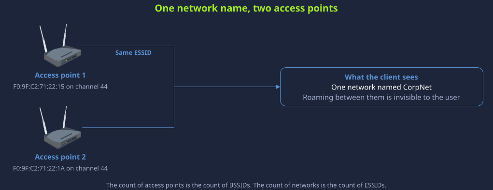
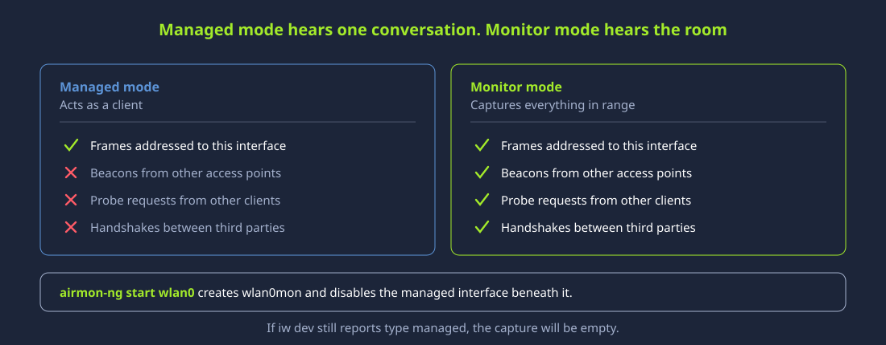
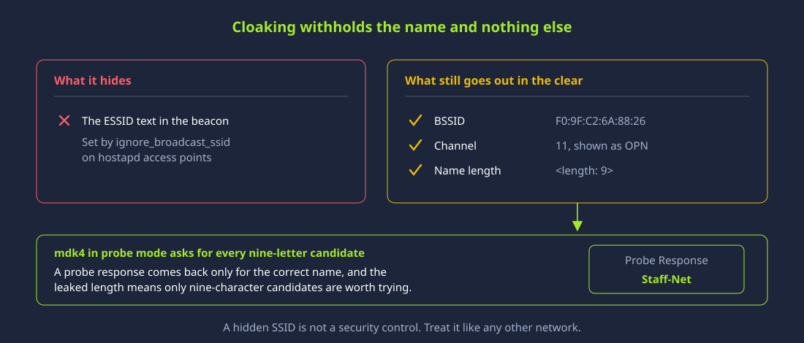

Session 10 — Evasion, Wireless & Emerging Tech
The final session. Slip past the defences that watch you, break into the air, sweep the modern surface — mobile, IoT, cloud — and meet the crypto under all of it.
Nine sessions in, you can find a foothold, escalate, analyse malware, break a web app, and own the network around it. This last session covers everything that is left — and it is a lot: the defences that watch you (IDS, firewalls, honeypots) and how attackers slip past them, the wireless air you can attack without a cable, the emerging surface every organisation now runs on (mobile, IoT/OT, cloud), and the cryptography that quietly underpins the whole diploma.
You will evade a lab IDS with fragmented and decoyed scans, capture and crack a WPA2 handshake, find an exposed cloud bucket and a default-credentialed IoT device, and get your hands on real crypto — then close the diploma with a defence-in-depth capstone that ties all ten sessions together.
Four blocks — evasion, wireless, emerging tech, crypto — each with theory, a diagram that plays, and a ▶ Prove it mini-lab. It is a sweep: broad by design, so you know the surface exists and where to go deeper. Everything on the isolated lab or your own kit. Then we graduate.
Nine Sessions Down — The Last Surface
You have covered the core attack chain end to end. This session is the perimeter around it — the defences, the air, the new platforms, and the math.
Recon (S2), scanning (S3), enumeration/access (S4), exploitation (S5), escalation (S6), malware (S7), web apps (S8), and the network/human surface (S9). That is a complete offensive chain and its defensive mirror. What remains are the pieces that touch all of it: the monitoring you must evade, the wireless entry point, the modern platforms that moved the data off the traditional network, and the cryptography that has been under every session (hashes in S4, TLS in S8–9, payload encoding in S5–7).
You have the chain; this is the terrain around it. Defences to evade, air to attack, new platforms to sweep, and the crypto beneath everything. Breadth now; depth is the career.
Why a Sweep — The Surface Keeps Growing
An attacker only needs one way in, and the ways multiply every year. Knowing the whole surface is what stops you missing the open door.
A defender must cover every surface; an attacker needs one. As organisations moved to Wi-Fi, phones, smart devices, and the cloud, they multiplied the doors — often faster than they secured them. And all of it runs on cryptography that is strong in theory but frequently mis-deployed (weak Wi-Fi, an old hash, a misconfigured bucket). This session is a sweep so you never miss the surface that is actually open.
Countless breaches trace to a single cloud storage bucket set to "public" — no exploit, no malware, just a checkbox. The data was encrypted at rest and in transit; the crypto was fine. The access control was not. It is the perfect emblem of this session: the new surface fails not because the math is weak, but because it is deployed wrong.
The open door is the one you did not check. Evasion, wireless, mobile, IoT, cloud, crypto — a sweep of all of them means you find the way in before an attacker does.
The Defences That Watch — IDS, IPS, Detection Methods
Before you evade the monitoring, understand how it detects. The method it uses decides how you get past it.
An IDS watches traffic and alerts; an IPS sits inline and blocks. Both detect one of two ways: signature-based (match known-bad patterns — blind to anything new) or anomaly-based (flag deviations from a learned baseline — noisier). Evasion targets the detection method: defeat a signature by changing the bytes; defeat anomaly detection by looking normal or going slow. Click each.
# For any IDS you meet, ask two questions:
# 1. inline (IPS, blocks) or out-of-band (IDS, alerts)?
# 2. signature (beat by changing bytes) or anomaly (beat by looking normal / slow)?
# Snort/Suricata = mostly signature NIDS -> fragmentation & encoding evade it
# an ML anomaly engine -> low-and-slow, blend-in traffic evades itYou should see: the two questions — where it sits and how it decides — tell you exactly which evasion technique applies. Evasion is not magic; it is matching your method to the detector's blind spot.
Signature → change the bytes; anomaly → look normal or go slow. Know whether the sensor matches patterns or learns baselines, and the evasion picks itself. Defence-in-depth (both, plus HIDS) is why one trick rarely wins.
IDS Evasion — Same Attack, Invisible Wrapper
The payload is the same; the wrapper hides it. Learn the techniques that make a malicious packet look benign to the sensor.
Most IDS evasion exploits one idea: the IDS and the target reassemble traffic differently. Split a payload across fragments the IDS won't reassemble, encode it so the signature won't match, or craft packets one of them accepts and the other rejects — and the attack reaches the target while the sensor sees nothing. Click each technique.
# same nmap scan, made harder to fingerprint:
nmap -f 192.168.56.20 # fragment packets
nmap -D 10.0.0.5,10.0.0.6,ME target # decoys — hide your real IP in the noise
nmap --source-port 53 target # masquerade as DNS (source-port trick)
nmap -T2 target # slow timing — under rate thresholdsYou should see: the scan is identical; the wrapper (fragments, decoys, a trusted source port, slow timing) is what a signature/rate IDS misses. Evasion is packaging, not a different attack — which is why full reassembly and anomaly detection are the counters.
The IDS and the target don't always agree. Fragment, splice, encode, or tunnel, and the sensor sees something different from the victim. Defence: reassemble fully, normalise, and inspect encrypted traffic where you can.
Firewalls and How Traffic Slips Through Them
A firewall filters by rules; attackers hide inside the traffic the rules allow. Watch blocked traffic ride an allowed protocol.
A firewall allows some traffic (port 80/443 out, say) and blocks the rest. Evasion means making forbidden traffic look like the permitted kind: port hopping onto 80/443, tunnelling a blocked protocol inside an allowed one (a shell over DNS or HTTP), or spoofing a trusted source. The firewall's rule is satisfied; your traffic is inside. Watch a DNS tunnel carry a shell out of a network that blocks everything but DNS.
# DNS tunneling hides in allowed traffic, but the PATTERN betrays it:
# * hundreds/thousands of queries to ONE domain
# * long, random-looking subdomains (base32/hex-encoded data)
# * TXT/NULL record types at high volume
# a quick hunt over DNS logs:
sort dns.log | awk '{print $domain}' | uniq -c | sort -rn | headYou should see: the tunnel satisfies the firewall rule, but the volume and entropy of the DNS give it away. Firewall evasion hides the traffic type; it cannot hide the abnormal behaviour — which is why detection moves to analytics.
Hide forbidden traffic in an allowed protocol. Port-hop, tunnel, spoof — the firewall rule is satisfied. But the tunnel's behaviour (volume, entropy, timing) is anomalous, so egress filtering + DNS analytics are the real defence.
Honeypots — The Trap That Watches Back
Not every easy target is a gift. Learn how defenders lure attackers into decoys — and how attackers try to spot the trap.
A honeypot is a decoy system with no real purpose except to be attacked — so any interaction with it is suspicious by definition, making it a very high-signal detector. For the attacker, that inverts the usual logic: an unusually easy, unusually exposed target might be a trap that is logging your every move. Both sides play the same game — the defender makes it look real, the attacker checks whether it is.
| Interaction level | What it simulates | Trade-off |
|---|---|---|
| Low-interaction | a few fake services / banners (Honeyd) | safe & cheap, but shallow data — easy to fingerprint |
| Medium-interaction | a broader emulated service (Cowrie SSH) | more data, still emulated |
| High-interaction | a real OS/services, monitored | richest data, but real risk if the attacker escapes it |
| Pure / honeynet | a whole decoy network | maximum realism and cost |
# clues that an 'easy' target is a trap:
nmap -sV --script banner target # default/odd banners, too many open ports
# * response times too consistent (emulated), or a VM-vendor MAC OUI
# * services that accept ANY credential, or replies that don't fully implement the protocol
# a box that is TOO open and TOO helpful is suspiciousYou should see: a target that is implausibly exposed, answers too perfectly, or has emulated-looking services may be a honeypot logging you. The defender's goal is realism; yours is to notice what a real system would never do.
Any touch of a honeypot is a detection. For defenders it is a near-zero-false-positive sensor; for attackers an implausibly soft target is a reason to slow down and check, not celebrate.
Lab A — Scan Past a Watching IDS
Run a scan a signature IDS catches, then wrap it — fragments, decoys, timing, source port — and watch the alerts stop.
You will point a noisy scan at a lab host running Snort/Suricata, confirm it alerts, then re-run the same scan with evasion options and watch the alerts drop — seeing both the attacker and defender side of the reassembly gap.
A lab target running an IDS you control. Evasion scanning of a network you do not own is hostile and often illegal.
-
Baseline — run a normal scan and confirm the IDS alerts:
nmap -sS -sV 192.168.56.20 # on the IDS host, watch alerts fire: tail -f /var/log/suricata/fast.log # 'ET SCAN Nmap' etc.✓ Verification
- The plain scan lights up the IDS — your baseline. Now you will make the same scan quieter.
-
Fragment + source-port — defeat signature/port heuristics:
nmap -f --source-port 53 -sS 192.168.56.20 # fragmented packets + traffic that looks like DNS source-port✓ Verification
- Fragmentation can slip past a sensor that doesn't fully reassemble; the source-port trick makes the traffic look like a trusted service. Fewer/less-specific alerts.
-
Decoys + slow timing — hide in noise and stay under thresholds:
nmap -D RND:10 -T2 -sS 192.168.56.20 # 10 random decoy source IPs; -T2 slow to dodge rate-based detection✓ Verification
- Decoys bury your real IP among ten fakes, and slow timing avoids rate triggers. To an anomaly/rate sensor, the scan blends in.
-
Flip to defender — make the IDS win again:
# in Suricata: enable stream/frag reassembly + anomaly rules # now the fragmented scan is reassembled and re-detected. # lesson: evasion beats a NAIVE sensor; a well-configured, layered one still catches it.✓ Verification
- Turning on full reassembly and anomaly detection re-catches the evaded scan — proving evasion targets misconfiguration, and defence-in-depth is the counter.
The same scan, wrapped, beats a naive sensor — and a hardened one re-catches it. Fragments, decoys, timing, source-port on offence; full reassembly, anomaly rules, layering on defence.
Why wireless is a different attack surface
The signal leaves the building — so the attacker never needs a cable, a port, or a login.
The wireless attack surface has no wall. If the signal reaches the car park, so does the attacker — no cable, port, or login required. That single property is why every other page in this block matters.
RF bands and channels
2.4 vs 5 GHz, and why real networks cluster on channels 1, 6 and 11.

SSID / ESSID vs BSSID
One network name over many radios — the name-vs-address gap every impersonation attack exploits.

Attacks target the BSSID — a MAC address you can forge. Users only ever see the ESSID — a name. That gap between the name a human trusts and the address a radio uses is what every impersonation attack pries open.
WEP → WPA → WPA2 → WPA3
Each generation exists because the previous one was broken.
| Protocol | Introduced | How it fell | Result today |
|---|---|---|---|
| WEP | 1999 | Broken by 2001: the RC4 key leaks from reused IVs (the Fluhrer–Mantin–Shamir attack). With enough captured traffic, tools recover the key in minutes. | Retired — never use it |
| WPA | 2003 | A rushed stopgap so old WEP hardware could keep working — same RC4, wrapped in TKIP. TKIP weaknesses (Beck–Tews, 2008–09) let attackers forge some packets. | Deprecated — interim only |
| WPA2 | 2004 | Its AES-CCMP cipher is still unbroken. The weak point is the 4-way handshake: capture it and guess the passphrase offline; KRACK (2017) also replayed handshake keys. | Still used — only as strong as the passphrase |
| WPA3 | 2018 | Replaces the crackable handshake with SAE (Dragonfly), so guesses can't be tested offline; early Dragonblood side-channels (2019) were patched. | Current standard |
The whole pattern in one line: each generation exists because the previous one broke — WEP by weak IVs, WPA by TKIP on old hardware, WPA2 by an offline-crackable handshake, and WPA3 finally closes that last door.
WEP is retired by design, WPA was a stopgap, WPA2 (AES-CCMP) is still solid but its handshake is offline-crackable, and WPA3/SAE closes exactly that door. Knowing which flaw each fixed is the exam answer.
The 4-way handshake
Only nonces and MICs cross the air — the PMK never does.
| Frame | Direction | Carries | Meaning |
|---|---|---|---|
| 1 · ANonce | AP → Station | the AP's random number | The access point picks a fresh nonce and sends it. Needed for the crack. |
| 2 · SNonce + MIC | Station → AP | station nonce + integrity code | The station sends its own nonce and a MIC (a hash proving it holds the PMK). This is the key frame — needed for the crack. |
| 3 · GTK + MIC | AP → Station | group key (encrypted) | Installs the broadcast/multicast key. Not needed to crack the passphrase. |
| 4 · ACK | Station → AP | confirmation | “Key installed.” Not needed to crack. |
For the offline crack you only need frames 1 + 2 — the two nonces and the MIC. Feed them (plus the AP/client MAC addresses and the SSID) to hashcat/aircrack-ng: for every guessed passphrase it re-derives the PTK and checks whether the MIC matches. That is exactly why the attacker fires a deauth — to force the client to reconnect so frames 1 and 2 reappear on the air for the monitor-mode capture.
The 4-way handshake only carries nonces and MICs. Capturing it does not hand over the passphrase — it hands over the material needed to guess the passphrase offline. A long, unique passphrase is the whole defence.
WPA3 / SAE
Why capturing the exchange no longer lets you crack it offline.
WPA3’s SAE never puts an offline-testable value on the air, so the same capture-and-crack that beats WPA2 is useless — the attacker is pushed back to slow, rate-limited online guessing, and PMF kills the deauth that starts it.
Enterprise 802.1X — EAPOL & RADIUS
No shared password — every user authenticates to a central RADIUS server.
802.1X replaces the network-wide PSK with a per-user decision made by a RADIUS server. The AP is a blind relay until Access-Accept, so the WPA2 capture-and-crack path simply does not exist — the attack surface moves to the EAP method and certificate validation.
Attack methodology
Discover → Wardrive → Capture → Crack → Compromise.
Discover → Wardrive → Capture → Crack → Compromise. Recon is passive and quiet; most of the detectable noise — and the SOC’s best chance — sits at the Capture step, where the deauth and handshake grab happen.
Attack taxonomy
The five goals every wireless attack maps to.
Every wireless attack maps to one of five goals — access, confidentiality, integrity, availability, authentication. Place a new attack in that grid first and the right countermeasure follows directly.
Discovery & recon
Monitor mode, channel sweep, and the hidden-SSID reveal — all passive.



WPA2 PSK crack — capture & crack
Grab a real handshake off the air, crack it offline, then walk in.
The attacker never breaks AES — they crack the passphrase that seeds it, offline, after one loud deauth. Everything after the capture is silent, which is exactly why a strong, unique passphrase defeats the entire chain.
Deauth / Disassoc DoS
Unsigned management frames — flood them and nobody stays connected.
Management frames carry no signature, so a forged deauth is indistinguishable from a real one. Sent in a loop it is pure denial of service, and it is the same primitive that kicks a victim onto an Evil Twin. WPA3’s PMF is what finally signs them.
PMKID — the clientless crack
One association to the AP: no client, no deauth, no noise.
PMKID needs no client and no deauth — one association to the AP yields the crackable value. Same offline hashcat crack as the handshake, but almost nothing for a SOC to see. Expect it on current CEH.
Evil Twin / Rogue AP
Jam the link, then wear the real AP's name so the victim reconnects to you.
Evil Twin cracks nothing. It exploits the ESSID/BSSID gap and a captive portal, and the victim volunteers the credentials — so WPA2 strength is irrelevant. The tell is two BSSIDs advertising one ESSID, plus surprise re-login prompts.
WPS — Reaver & Pixie-Dust
The 8-digit PIN is the weak link — Pixie-Dust cracks it offline.
WPS turns a strong WPA2 passphrase into an 8-digit PIN — checked in two halves, and on weak-RNG APs recovered offline by Pixie-Dust from a single exchange. Recover the PIN and the AP hands over the full PSK. The fix is one setting: turn WPS off.
WEP · KRACK · Dragonblood
The broken and the patched — how three generations each fell.
WEP is broken by design — RC4 with repeating IVs leaks the key, no wordlist needed. KRACK (2017) and Dragonblood (2019) were implementation bugs in WPA2 and WPA3. WEP you retire; KRACK and Dragonblood you patch.
MAC filter bypass & spoofing
MAC addresses travel in the clear — copy an allowed one and walk in.
macchanger command. The filter can't tell the difference — it only checks the address, which is trivially forgeable. Useful as a speed-bump, never as a control. SOC tell: two devices with the same MAC active at once (a MAC conflict / duplicate) is the classic indicator.Every frame carries its sender’s MAC in the clear, so an attacker sniffs an allowed one and clones it with a single macchanger command. Useful to slow someone down, never as a control. The tell is a duplicate-MAC conflict.
Bluetooth — bluejack · snarf · bug
Scan, then escalate from a nuisance message to full device control.
Bluetooth escalates from bluejacking (nuisance) to bluesnarfing (data theft) to bluebugging (full control) — all starting with a scan for discoverable devices. Non-discoverable by default, modern pairing, and patching close the exposure.
The wireless toolkit
Ten tools, mapped to the stage of the attack they own.
sudo airmon-ng check kill # kill NetworkManager etc. that interfere sudo airmon-ng start wlan0 # enable monitor mode -> creates wlan0mon iw dev # confirm: type should read "monitor" sudo airmon-ng stop wlan0mon # restore normal (managed) mode
sudo airodump-ng wlan0mon # scan every AP + client sudo airodump-ng -c 11 --bssid <AP_MAC> -w cap wlan0mon # lock 1 AP+channel, write cap-01.cap sudo airodump-ng --band a wlan0mon # scan the 5 GHz band # -c channel --bssid target AP -w output file prefix
sudo aireplay-ng --test wlan0mon # verify injection works sudo aireplay-ng --deauth 5 -a <AP_MAC> -c <CLIENT_MAC> wlan0mon # kick 1 client -> handshake sudo aireplay-ng --deauth 0 -a <AP_MAC> wlan0mon # non-stop broadcast deauth (DoS)
aircrack-ng cap-01.cap # check the file has a handshake ("1 handshake") aircrack-ng -w rockyou.txt -b <AP_MAC> cap-01.cap # crack WPA/WPA2 with a wordlist aircrack-ng cap-01.cap # crack WEP (needs enough captured IVs)
hcxpcapngtool -o hash.22000 cap.pcapng # convert capture -> 22000 hash first hashcat -m 22000 hash.22000 rockyou.txt # crack with a wordlist hashcat -m 22000 hash.22000 rockyou.txt -r rules/best64.rule # add mangling rules hashcat -m 22000 hash.22000 --show # print the recovered passphrase
sudo hcxdumptool -i wlan0mon -o dump.pcapng --enable_status=1 # grab PMKID/EAPOL, no deauth sudo hcxdumptool -i wlan0mon -o dump.pcapng --filterlist_ap=target.txt --filtermode=2 # one BSSID hcxpcapngtool -o hash.22000 dump.pcapng # convert for hashcat -m 22000
sudo wash -i wlan0mon # list APs with WPS enabled sudo reaver -i wlan0mon -b <AP_MAC> -c 11 -K 1 -vv # Pixie-Dust (offline, fast) sudo reaver -i wlan0mon -b <AP_MAC> -c 11 -vv # online PIN brute force (slow, loud) pixiewps -e <PKE> -r <PKR> -s <EH1> -z <EH2> -a <AUTHKEY> -n <ENONCE> # run pixiewps directly
sudo wifite # scan, pick targets, deauth, capture, crack sudo wifite --wpa -w rockyou.txt # only WPA, use this wordlist sudo wifite --wps # only WPS (Pixie-Dust) sudo wifite --5 # include the 5 GHz band
sudo kismet -c wlan0 # start capture (auto-sets monitor mode) # then open the web UI at http://localhost:2501 sudo kismet -c wlan0 -n # headless: just log to disk for later
wireshark cap-01.cap # open the capture in the GUI eapol # display filter: the 4-way handshake wlan.fc.type_subtype==0x0c # display filter: deauth frames wlan.addr==<MAC> # everything to/from one device tshark -r cap-01.cap -Y eapol # same, on the command line
How they fit together. A full engagement is airmon-ng → airodump-ng to find the target, aireplay-ng / hcxdumptool to grab the crackable material, aircrack-ng / hashcat / reaver to break it, and wireshark to confirm. wifite chains it all for you — great for speed, loud for a SOC.
airmon/airodump find and capture, aireplay/hcxdumptool grab the crackable material, aircrack/hashcat/reaver break it, and wireshark verifies. wifite chains the whole thing — great for speed, loud for a SOC.
SOC lens — WIDS / WIPS
The same attacks from the blue side, with detection and ATT&CK.
| Attack | What the SOC sees | Detection | ATT&CK |
|---|---|---|---|
| Deauth / DoS | Burst of deauth/disassoc frames from one source; clients flapping | WIDS deauth-rate threshold; alert on >N deauth/sec per BSSID | T1499 · T1557 |
| Evil Twin | Two BSSIDs advertising one ESSID; signal/BSSID change; re-login prompts | WIPS rogue-AP detection; SSID/BSSID allow-list; wIPS containment | T1557.002 |
| Handshake capture | Deauth burst immediately followed by a client 4-way re-handshake | Correlate deauth + EAPOL M1–M4 in a short window | T1557 · T1110 |
| PMKID | Near-silent — a single association, lone EAPOL, no full handshake | Hunt hcxdumptool assoc pattern; EAPOL with no data frames after | T1557 |
| WPS / Pixie-Dust | Repeated EAP-WPS (M1–M8) exchanges; reaver association signature | Alert on WPS registrar attempts; WPS lockout counters | T1110 |
| MAC spoofing | Two devices with the same MAC active at once (MAC conflict) | Duplicate-MAC / sequence-number anomaly alert | T1036 · T1557 |
WIDS vs WIPS. A WIDS detects and alerts on these patterns; a WIPS can also act — de-authing a rogue AP or containing it. The recurring blue-team truth from this whole session: the online steps (deauth, association, WPS registrar traffic) are what you catch — the offline crack is invisible, so detection lives at capture time, and prevention lives in the countermeasures below.
The online steps — deauth, association, WPS registrar traffic — are what a WIDS/WIPS catches; the offline crack is invisible. So detection lives at capture time, and prevention lives in the countermeasures.
Countermeasures & hardening
Each control closes a specific door you watched an attacker walk through.
WPA3 / SAE
Move off WPA2-PSK where possible. SAE removes the offline-crackable value from the air.
802.1X / EAP-TLS
Enterprise auth with per-user certs and a RADIUS server — no shared PSK to capture.
PMF (802.11w)
Protected management frames sign deauth/disassoc so forged ones are rejected.
Disable WPS
Turn off WPS entirely — the 8-digit PIN is an offline-crackable backdoor to the PSK.
WIPS + rogue detection
Continuously scan for unknown BSSIDs on your ESSIDs and contain them automatically.
NAC + segmentation
Certificate/posture-based network access control; guest and IoT on isolated VLANs.
Strong, unique PSK
If PSK is unavoidable, a long random passphrase makes offline cracking infeasible.
Retire WEP & patch
Never run WEP. Keep clients & APs patched to close KRACK and Dragonblood.
Bluetooth hygiene
Non-discoverable by default, modern pairing, patch — kill snarf/bug exposure.
The priority order. If you can only do a few: PMF on (kills the deauth primitive that starts most attacks), WPS off (removes a free PSK), WPA3 or 802.1X (removes the offline crack), and WIPS watching for rogue APs. Everything else is depth around those four.
If you can only do a few: PMF on (kills the deauth primitive), WPS off (removes a free PSK), WPA3 or 802.1X (removes the offline crack), and a WIPS watching for rogue APs. Everything else is depth around those four.
Hands-on lab — capture & crack WPA2
Do the full chain yourself against a lab AP you own.
sudo airmon-ng start wlan0 # creates wlan0mon sudo airmon-ng check kill # stop conflicting processes
sudo airodump-ng wlan0mon # note BSSID + CH, then Ctrl-Csudo airodump-ng -c <CH> --bssid <BSSID> -w cap wlan0mon
sudo aireplay-ng --deauth 5 -a <BSSID> -c <CLIENT> wlan0mon
wireshark cap-01.cap # filter: eapolaircrack-ng -w /usr/share/wordlists/rockyou.txt -b <BSSID> cap-01.cap
# or, faster on a GPU:
hcxpcapngtool -o hash.22000 cap-01.cap && hashcat -m 22000 hash.22000 rockyou.txtStay legal. Only run this against hardware you own or have explicit written authorisation to test. Capturing or cracking any other network is illegal in most jurisdictions — the skill is the point, not the target.
Run this against hardware you own or have written authorisation to test — capturing or cracking any other network is illegal in most places. The skill is the point, not the target.
Halfway — From the Perimeter to the Platform
You evaded the defences and broke into the air. After the break: the modern surface — mobile, IoT, cloud — and the crypto beneath it all.
First half attacked the perimeter: you learned how IDS/IPS detect and evaded them (fragmentation, decoys, tunnelling), understood firewalls and honeypots, and ran the full wireless attack — deauth, handshake capture, offline crack. Second half sweeps the emerging surface — mobile, IoT/OT, and cloud, where most modern data now lives — and finishes with the cryptography that underpins the entire diploma, before the graduation capstone.
Stop any monitor-mode capture and restore your adapter (airmon-ng stop wlan0mon). Save your evasion notes and the cracked-handshake result for the capstone report. One block of new surface and the crypto foundation to go — then you graduate. Back in five.
Perimeter, then platform. You have slipped the defences and taken the air. The data itself now lives on phones, in devices, and in the cloud — the second half goes where it went.
Mobile — The Computer in Every Pocket
Phones hold the crown-jewel data and travel everywhere. Learn the mobile attack surface and why the app store is the new perimeter.
A phone is a full computer holding email, MFA tokens, corporate data — and it lives outside the office network, on untrusted Wi-Fi, installing code from an app store. The attack surface spans the app (insecure storage, weak crypto), the device (jailbreak/root, lost/stolen), the network (the MITM you already know), and the platform (malicious or over-permissioned apps). The OWASP Mobile Top 10 is the map. Click each surface.
# pull an APK you own and inspect it — the mobile version of static analysis (S7):
unzip -o app.apk -d app_out # AndroidManifest + resources
# look at requested PERMISSIONS in AndroidManifest.xml (does a torch app need SMS + contacts?)
# strings the compiled code for hardcoded URLs / keys:
strings app_out/classes.dex | grep -Ei 'http|api|key|secret' | headYou should see: over-broad permissions and hardcoded secrets are the two fastest mobile findings — and both come from static inspection you already know from Session 7. A torch app asking for SMS + contacts is the tell.
Mobile moves trusted data outside your walls. App storage, device state, untrusted networks, and the app store are the four surfaces — and MDM + pinning + official-store-only cover most of them.
IoT and OT — When the Target Is a Thing
Cameras, sensors, and factory controllers rarely get patched and often ship with default passwords. And when OT fails, the world feels it.
The Internet of Things put cheap, rarely-patched computers everywhere — cameras, thermostats, routers — often with default credentials and old firmware. OT (Operational Technology: the ICS/SCADA that runs factories, power, water) is worse: decades-old protocols with no authentication, systems that cannot be taken down to patch, and physical consequences when they fail. Click each.
# on a lab IoT device (your own), the first test is always the vendor default:
hydra -l admin -P defaults.txt http-get / # or just try admin/admin
# and check exposure the way attackers do (conceptually):
# Shodan search for the device banner/model -> how many are on the internet? You should see: default credentials are the single most productive IoT test — try them first, every time. The reason Mirai worked at scale is that this one check succeeds on millions of devices. Only ever test devices you own.
IoT/OT fails on the basics: default creds, old firmware, no-auth protocols — with physical stakes. Segmentation, credential hygiene, and monitoring beat most of it; for OT, isolation and safety come before everything.
Cloud — Where the Data Actually Lives Now
Most data moved to the cloud, and most cloud breaches are misconfiguration, not exploitation. Learn the shared-responsibility line and the classic mistakes.
The cloud is not inherently insecure — but security is shared. The provider secures the infrastructure ("security of the cloud"); you secure your configuration and data ("security in the cloud"). Most cloud breaches are not exploits — they are the customer's side of that line done wrong: a public bucket, an over-permissioned key, an exposed management port. Click each.
aws s3 ls --no-sign-request — if it lists without credentials, it is public. Defence: block-public-access by default, least-privilege short-lived credentials, secret scanning, and continuous config scanning. Configuration is the attack surface.# the classic cloud finding — anonymous access to object storage (YOUR bucket):
aws s3 ls s3://your-test-bucket --no-sign-request # does it list WITHOUT creds?
curl https://your-test-bucket.s3.amazonaws.com/ # anonymous HTTP listing?
# if either returns contents, the bucket is public — the #1 cloud misconfig.You should see: if the bucket lists or serves objects with no credentials, it is public — the single most common cloud data-exposure. No exploit, just a wrong setting, which is the whole lesson of cloud security: configuration is the attack surface.
Secure the cloud of vs in. Public buckets, over-permissioned keys, exposed APIs — the cloud mostly fails on your side of the line, through settings. Least privilege + config scanning + block-public-by-default is most of the defence.
Lab C — Find the Open Bucket and the Default Device
Practise the two fastest emerging-surface findings on your own resources: an exposed storage bucket and a default-credentialed device.
The emerging surface fails on configuration, so the highest-yield tests are checks, not exploits. You will confirm an open storage bucket and a default-credentialed device on your own lab resources — the exact moves behind a huge share of real incidents.
Use a test bucket you created and a lab IoT device/VM you own. Probing other people's cloud or devices is illegal even when it's "just a listing."
Action:* = cloud root), and a default-credentialed device (admin/admin = instant access — the same check that built Mirai). Each is a one-line finding with a one-line fix, and none needs an exploit. Only ever test resources you own. That is real cloud/IoT assessment output — no memory corruption, high impact, and the fix is always configuration.-
Open bucket — create a test bucket, misconfigure it, and detect it anonymously:
# (your own test bucket) make it public, then check WITHOUT credentials: aws s3 ls s3://ceh-lab-test-bucket --no-sign-request curl -s https://ceh-lab-test-bucket.s3.amazonaws.com/ | head # contents returned = public = finding. Then re-apply Block Public Access and re-test.✓ Verification
- Anonymous access confirms the misconfiguration; re-enabling Block Public Access closes it — you have seen the finding and the fix.
-
Least-privilege check — inspect an IAM policy for over-permission:
# a policy with Action:* Resource:* is a red flag — scope it down: aws iam list-attached-user-policies --user-name lab-user # look for wildcards; least privilege = only the actions/resources actually needed.✓ Verification
- Wildcard IAM policies are the cloud equivalent of running as root — the finding is over-permission, the fix is scoping it down.
-
Default credentials — test a lab device/service for vendor defaults:
# on your lab IoT device/VM: hydra -l admin -P defaults.txthttp-get / # or just try admin/admin, root/root, the vendor default from the manual ✓ Verification
- Default creds are the fastest device finding — the same check that built the Mirai botnet. On your own device, then change them and re-test.
-
Write it up — these are report findings, not exploits:
# finding format: # 'S3 bucket ceh-lab-test-bucket is publicly listable (anonymous) — data exposure' # 'lab-user IAM policy grants Action:* — violates least privilege' # 'device at .50 accepts admin/admin — default credentials' # fix each in one line. This is real cloud/IoT assessment output.✓ Verification
- Each is a one-line finding with a one-line fix — exactly what an emerging-surface assessment delivers. No exploit, high impact.
The modern surface fails on settings. A public bucket, a wildcard IAM policy, a default password — found by checking, not exploiting, and fixed by configuration. That is most of cloud/IoT security.
Cryptography — The Foundation Under Everything
Every session touched it: hashes in S4, TLS in S8–9, WPA2 here. Now learn the three tools — and what each one is actually for.
Cryptography is not one thing; it is three tools for three jobs. Symmetric encryption (one shared key) provides confidentiality fast. Asymmetric encryption (a public/private key pair) solves key distribution and enables signatures. Hashing (one-way) provides integrity. Almost every security control you have used is a combination of these three. Click each.
Each cryptographic job has a small set of standard algorithms. Know the type, the core idea, and whether it is current or broken — that is what lets you both attack weak crypto and recommend the fix.
| Algorithm | Type | Core idea & use | Status |
|---|---|---|---|
| AES (128/192/256) | Symmetric | block cipher — many rounds of substitution + permutation driven by the key; bulk data, TLS body, WPA2 | current standard |
| DES / 3DES | Symmetric | 56-bit key (DES) / triple-DES; legacy bulk encryption | broken / deprecated |
| RSA (≥2048-bit) | Asymmetric | security rests on factoring a huge product of two primes being hard; key exchange + digital signatures | current (use ≥2048) |
| ECC | Asymmetric | elliptic-curve discrete-log; same security as RSA with much smaller, faster keys; keys + signatures on mobile/IoT | current |
| Diffie–Hellman | Asymmetric (key exchange) | both sides agree a shared secret over a public channel without ever sending it; the TLS session key | current (use ephemeral) |
| SHA-256 (SHA-2) | Hash | one-way 256-bit digest; integrity, password hashing (with salt), file identity | current |
| MD5 / SHA-1 | Hash | older 128-/160-bit digests; still seen on legacy systems | broken (collisions) |
echo -n 'secret' | sha256sum # HASHING: integrity, irreversible
openssl enc -aes-256-cbc -in f.txt -out f.enc # SYMMETRIC: confidentiality (AES)
openssl genrsa -out priv.pem 2048 # ASYMMETRIC: key pair (RSA)
openssl rsa -in priv.pem -pubout -out pub.pem # -> public key to shareYou should see: three commands, three tools, three jobs: a SHA-256 digest you cannot reverse, an AES-encrypted file you can, and an RSA key pair for exchange/signatures. Knowing which job each does is the whole point — confidentiality, key-exchange, integrity.
Symmetric = confidentiality (fast), asymmetric = key exchange + signatures (slow), hashing = integrity (one-way). Every protocol you have met combines them; naming the job each does is how you reason about any crypto.
Hybrid Cryptography — How TLS Actually Works
HTTPS isn't one algorithm — it's all three tools working together. Watch asymmetric set up a symmetric channel.
Asymmetric crypto is secure but slow; symmetric is fast but needs a shared key. TLS (the S in HTTPS) uses both: asymmetric crypto to exchange a symmetric session key safely, then fast symmetric AES for the actual data — with a signature-backed certificate proving the server's identity. This is the "hybrid" model, and it is why HTTPS defeated the sniffing and SSL-strip attacks from Session 9. Watch it.
openssl s_client -connect example.com:443 -servername example.com /dev/null | openssl x509 -noout -issuer -subject -dates
# you see: the CA that signed it (issuer), the identity (subject), and validity dates
# the whole hybrid dance happened before any data — asymmetric to set up, symmetric to runYou should see: the certificate's issuer/subject/validity are the asymmetric-signature half of TLS; once verified, the session drops to fast AES. This one handshake is why every S8–9 defence (TLS, HSTS, cert pinning) works.
TLS = asymmetric to exchange the key + signatures for identity + symmetric for speed. The hybrid model is why HTTPS is both secure and fast — and why it defeated the network attacks you ran in Session 9.
Hashing, Signatures, and How Crypto Fails in Practice
The math is rarely broken; the deployment is. Learn integrity and signatures — and the weak algorithms and mistakes that actually cause breaches.
Modern algorithms (AES, SHA-256, RSA-2048) are not broken by brute force. Crypto fails in deployment: an old algorithm (MD5, SHA-1, WEP, DES), a weak key/passphrase (your WPA2 crack), no salt on password hashes (S4), or trusting an unverified signature. Knowing where it breaks is what makes you useful — both to attack weak crypto and to recommend the fix.
h = h×31 + c), then mod 256 to keep it a fixed size. That mod is the trap door — 2142 and 2998 collapse to 94 and 182, and the part thrown away (2048, 2816) can never be recovered. Forward is trivial; backward is infeasible. SHA-256 is the same idea with far more mixing and a 256-bit output.| Mechanism | Provides | How it fails in practice |
|---|---|---|
| Hashing (SHA-256) | integrity | using MD5/SHA-1 (collisions); no salt on password hashes → rainbow tables (S4) |
| Digital signature | authenticity + non-repudiation | not verifying the signature; trusting a self-signed / expired cert |
| Symmetric (AES) | confidentiality | legacy DES/3DES; ECB mode; a hardcoded/reused key |
| Asymmetric (RSA/ECC) | key exchange + signatures | short keys (RSA-1024); a leaked private key; no cert validation |
| Wireless (WPA2) | Wi-Fi confidentiality | a weak passphrase → offline handshake crack (this session) |
A digital signature is a hash of the message encrypted with the sender's private key. Anyone with the public key can verify it — proving the message is authentic and unmodified. It is how your browser trusts a certificate and how software updates are verified. The failure is not the math; it is not checking it.
# identify a broken algorithm by its digest length / format:
echo -n x | md5sum # 32 hex chars = MD5 (BROKEN — flag it)
echo -n x | sha1sum # 40 hex chars = SHA-1 (deprecated — flag it)
echo -n x | sha256sum # 64 hex chars = SHA-256 (good)
# integrity check: change one byte of a file and watch the whole hash changeYou should see: the digest length fingerprints the algorithm — 32 hex = MD5 and 40 = SHA-1 are immediate findings. And flipping one byte changes the entire hash, which is exactly the integrity property that makes hashing useful for tamper-detection.
Modern crypto is strong; its use is often weak. Old algorithms, weak keys, missing salt, unverified signatures — that is where you find (and fix) crypto failures. Recommend current algorithms and, above all, verify.
Lab D — Hash, Encrypt, Sign, and Spot the Weakness
Get your hands on all three tools with OpenSSL, then audit a target's crypto for the weak algorithms that are real findings.
You will use each cryptographic tool directly, then do what a pentester does: audit a target's crypto — certificate, cipher suites, hash algorithms — and flag the weak ones. Crypto findings are real report items, and they are found by inspection.
-
The three tools — run each and see the job it does:
echo -n 'data' | sha256sum # integrity (one-way) openssl enc -aes-256-cbc -pbkdf2 -in f -out f.enc # confidentiality (symmetric) openssl genrsa -out k.pem 2048 && openssl rsa -in k.pem -pubout -out k.pub # key pair✓ Verification
- Hash, symmetric encryption, and an asymmetric key pair — the three jobs in three commands, now under your own hands.
-
Sign and verify — the mechanism behind certificates and updates:
openssl dgst -sha256 -sign k.pem -out sig f # sign a file with the PRIVATE key openssl dgst -sha256 -verify k.pub -signature sig f # verify with the PUBLIC key -> 'Verified OK'✓ Verification
- Signing with the private key and verifying with the public proves authenticity + integrity — exactly how your browser trusts a TLS certificate.
-
Audit a target's crypto — the pentester's move (your own/authorised host):
# certificate + protocol/cipher review: openssl s_client -connect TARGET:443 /dev/null | openssl x509 -noout -issuer -dates nmap --script ssl-enum-ciphers -p 443 TARGET # lists supported TLS versions + weak ciphers✓ Verification
- ssl-enum-ciphers grades every cipher suite — SSLv3/TLS1.0, RC4, or export ciphers are immediate findings, as are expired/self-signed certs.
-
Report the weaknesses — crypto findings are one-liners:
# example findings: # 'TLS 1.0 + RC4 supported — deprecated, downgrade risk -> disable, require TLS 1.2+' # 'password hashes are unsalted MD5 -> migrate to bcrypt/argon2 (S4)' # 'WPA2 passphrase weak -> long random passphrase or WPA3' # each: the weak crypto + the modern replacement.✓ Verification
- Weak protocol/cipher/hash + the modern fix — that is a crypto finding. You now audit and remediate the foundation under every other session.
Three tools, one audit skill. Hash, encrypt, sign — and grade a target's certificate and ciphers for the weak deployments that are real findings. The foundation under all ten sessions is now yours to inspect.
Every Attack Today, and How It's Caught
Four new surfaces, four detections. The defender's view of the whole sweep — and the theme that unifies the diploma.
Evasion, wireless, the modern surface — each still leaves a signal to the right sensor. Learn the four and you can monitor the terrain you attacked in this session. Click each.
EVASION → reassembly + analyticsBeat the wrapper
A well-configured IDS with full stream/fragment reassembly re-detects the fragmented scan; DNS tunneling is caught by analytics on query volume and subdomain entropy to a single domain. Evasion beats a naive sensor, not a layered, well-tuned one — the Lab A lesson.
WIRELESS → WIDSThe air has sensors too
A Wireless IDS flags a flood of deauthentication frames (the attack primitive) and the appearance of a rogue AP broadcasting a duplicate SSID/BSSID (the evil twin). Controls: 802.11w Protected Management Frames and WPA3 remove the deauth primitive entirely.
CLOUD/IoT → CSPM + logsConfig is the sensor
Cloud Security Posture Management continuously scans for public buckets and over-permissioned IAM; access logs record the anonymous GETs; device inventories flag default-credentialed and unpatched IoT. Because the flaw is configuration, detection is continuous config scanning, not payload matching.
CRYPTO → inventory + scanFind the weak deployment
A TLS/cipher scanner (ssl-enum-ciphers, testssl.sh) and a continuous certificate/cipher inventory surface deprecated protocols (TLS 1.0), weak ciphers (RC4), and expiring/old-algorithm certs. The failure is deployment, so the detection is auditing the deployment.
Evasion, wireless, cloud, crypto — each leaves a signal to the right tool. Reassembly + DNS analytics, WIDS, CSPM, and TLS inventory. The diploma's theme, one last time: every attack is detectable if you know where to look.
Lab E — The Defence-in-Depth Capstone
Tie all ten sessions together: assess a target across every layer and write the report that shows how the defences fit — and fail — as one system.
This is the capstone. Take a lab environment and assess it across every layer you have learned — recon, exploitation, privesc, malware, web, network, evasion, wireless, cloud, crypto — then write a defence-in-depth report that shows how the controls layer, where the gaps are, and what to fix first. This is what a real assessment produces, and it is your graduation piece.
-
Assess across the layers — walk the whole chain against the lab, noting findings at each:
# recon/scan (S2-3) -> exposure ; access/exploit (S4-5) -> footholds # privesc (S6) -> escalation paths ; malware (S7) -> detection gaps # web (S8) -> injection ; network (S9) -> MITM/session/DoS # this session (S10) -> evasion posture, wireless, cloud config, crypto✓ Verification
- A single pass across all ten sessions produces a layered picture — not a list of unrelated bugs, but how an attacker would chain them.
-
Map the defence-in-depth — for each finding, which layer of control failed and which caught it:
# e.g. web SQLi got a foothold (app control failed) BUT # the LSASS dump was caught by Sysmon 10 (endpoint control held). # show the chain: where defence failed, where it held, where it would have stopped the attack.✓ Verification
- Framing findings as a defence-in-depth chain — what failed, what held — is the difference between a bug list and an assessment a leader can act on.
-
Prioritise by risk and leverage — the fixes that close the most attack paths first:
# top-leverage controls across the diploma: # MFA (kills phished pw + limits stolen tokens) ; patching (kills S5 exploits) # least privilege (limits S6 escalation) ; TLS+cookie flags (kills S9 sniffing) # parameterised queries (kills S8 SQLi) ; config scanning (kills S10 cloud misconfig)✓ Verification
- A prioritised, leverage-ranked plan — the handful of controls that each close many attack paths — is the most valuable page in any report.
-
Write the capstone report using the template — the artifact that proves the diploma:
# structure: exec summary -> attack narrative (the chain) -> findings by layer # -> defence-in-depth analysis -> prioritised remediation -> detections # this is a portfolio piece — the thing you show an employer.✓ Verification
- The finished report demonstrates everything: you can attack across the stack, think in defence-in-depth, and communicate to a decision-maker. That is a job-ready deliverable.
Produce the capstone using exercises/session-10/capstone_report_template.md. It spans all ten sessions and is the single best artifact for your portfolio — keep it, refine it, show it.
Security is layers, not a checklist. The capstone shows how attacks chain and how controls layer to break the chain. Thinking in defence-in-depth — not isolated bugs — is what makes you the professional this diploma set out to build.
Defence in Depth — The Idea Behind Every Session
No single control stops a determined attacker. The whole diploma has been building one idea: layer the defences so a gap in one is covered by the next.
Every session ended in the same place: not one magic fix, but a layer that catches what the previous one missed. Patch to stop the exploit; least-privilege to limit the escalation; EDR to catch the malware; parameterised queries to kill the injection; TLS to protect the session; MFA to defang the phish; segmentation to contain the spread; monitoring to see it all. Attackers chain weaknesses; defenders chain controls.
| Layer | Control | Stops (which session) |
|---|---|---|
| Perimeter | firewall + IDS/IPS + egress filtering | scanning/evasion (S3, S10), C2 (S7) |
| Identity | MFA + least privilege + strong auth | phishing (S9), escalation (S6), cred reuse (S4) |
| Application | parameterised queries, output encoding, input validation | web injection (S8) |
| Endpoint | EDR/AV + patching + app allow-listing | exploitation (S5), malware (S7) |
| Network | TLS + segmentation + DAI + cookie flags | sniffing/MITM/hijack (S9) |
| Data | encryption + backups + access control | ransomware (S7), cloud exposure (S10) |
| Detection | SIEM + logging + a SOC that reads it | everything — the SOC flip of every session |
# take the web-to-domain chain and mark each control that could break it:
# SQLi foothold -> parameterised queries (app layer) would stop it
# privesc to SYSTEM -> least privilege (identity) would limit it
# LSASS dump -> EDR/Sysmon 10 (endpoint+detection) catches it
# lateral movement -> segmentation (network) contains it
# ONE control at any layer breaks the chain — that is defence in depth.You should see: an attack needs every link; a defender needs to break just one. Tracing a real chain through the layers shows why no single control matters as much as having a control at every layer.
Attackers chain weaknesses; defenders chain controls. A gap in one layer is covered by the next, and detection sits under all of it. That principle — not any one tool — is the real lesson of the diploma.
Ten Sessions — The Whole Map
Step back and see it: from your first ping sweep to a full-stack, both-chairs security professional. Here is everything you can now do.
You started by finding hosts on a network. You can now assess an organisation across every layer an attacker touches — and you can sit in the defender's chair for all of it. This is the arc:
| Session | You can attack | You can defend |
|---|---|---|
| S1–2 | footprint & recon a target (OSINT, passive/active) | reduce your org's attack surface & exposure |
| S3 | scan networks & read the protocols behind each service | detect scanning; read what the SOC sees on the wire |
| S4 | enumerate, attack AD, crack & roast credentials | catch enumeration & credential attacks (4768/4769) |
| S5–6 | exploit to a shell, then escalate to root/SYSTEM | detect exploitation, privesc & LSASS access (Sysmon 10) |
| S7 | build & analyse malware, static and dynamic | write YARA/Sigma; run a sandbox & triage |
| S8 | break web apps — XSS, upload, SQLi to sqlmap | access-log detection; parameterise & encode |
| S9 | MITM, hijack sessions, phish, DoS | ARP/hijack/phish/flood detection; TLS+MFA+DAI |
| S10 | evade defences, break Wi-Fi, sweep cloud/IoT, audit crypto | reassembly, WIDS, CSPM, TLS inventory — defence in depth |
You can attack across the whole stack and defend it. That dual fluency — the attacker's method and the defender's detection, on every layer — is exactly what makes a SOC analyst, a pentester, or a security engineer. It is yours now.
Where Next — From Diploma to Career
You have the map. Here is how to deepen it, prove it, and turn it into a role — the certifications, paths, and practice that follow CEH.
This diploma gave you breadth: the whole surface, both chairs. A career is depth in the part you love. Pick a direction, prove it with hands-on practice and a certification, and keep the capstone report as your portfolio anchor.
| Direction | What it is | Next steps |
|---|---|---|
| Offensive / pentest | find & exploit, professionally | OSCP (hands-on), PNPT, HTB/PG practice; build the S8/S10 reports into a portfolio |
| Defensive / SOC (your track) | detect & respond — the blue team | BTL1 / CySA+ / the SOC-analyst path; deepen Wazuh/Sigma/Splunk from every SOC-flip page |
| DFIR | forensics & incident response | GCFA/GCIH-style paths; build on the S7 malware-analysis workflow |
| GRC | governance, risk & compliance | ISO 27001 / risk frameworks; the report-writing you practised all diploma |
The habits that made this diploma stick: TryHackMe and Hack The Box for hands-on rooms across every topic; PortSwigger Web Security Academy (free) for web depth; LetsDefend / Blue Team Labs Online for the defensive side; and build a home lab — the one you used all diploma — to try anything safely. One room a week keeps the edge.
You have the whole map; now go deep where it grabs you. Pick a direction, prove it hands-on, certify it, and let the capstone report open the door. The diploma was the foundation — the career is the build.
Final Knowledge Check
Six questions across the session. Answer before you reveal — each explains the reasoning, not just the letter.
Q1Which evasion technique defeats a signature-based IDS specifically?
- Going low-and-slow under a rate threshold
- Blending into normal traffic patterns
- Fragmenting/encoding the payload so the exact signature bytes never appear together
- Sending traffic during business hours
Q2An attacker gets a shell out of a network that blocks everything except DNS. How, and how is it caught?
- They crack the firewall; caught by the firewall logs
- DNS tunneling; caught by DNS analytics (high volume, long random subdomains)
- They disable the firewall; caught by a config alert
- Port scanning; caught by an IDS signature
Q3Why is capturing a WPA2 handshake so dangerous even though WPA2 uses strong AES?
- AES is actually broken
- The handshake contains the plaintext password
- It lets you decrypt all past traffic instantly
- The passphrase can then be cracked offline — no rate limit, no lockout
Q4What causes the majority of real-world cloud data exposures?
- Customer misconfiguration (e.g. a public storage bucket), not provider exploits
- Weak encryption algorithms in the cloud provider
- The provider's hypervisor being hacked
- DDoS attacks on the data centre
Q5How does TLS combine the cryptographic tools?
- It uses only RSA for everything
- Asymmetric exchanges a symmetric key (with a signed cert for identity), then symmetric AES encrypts the data
- It hashes the data and sends the hash
- It uses only AES with a pre-shared key
Q6Where does cryptography most commonly fail in practice?
- The core algorithms are brute-forced
- Quantum computers break it routinely today
- In deployment — old algorithms, weak keys, missing salt, unverified signatures
- Hashing is reversible
5–6 right: you have swept the whole surface — go deep on your chosen track. 3–4: re-read the evasion and crypto pages. <3: rewatch the wireless and TLS diagrams — they anchor the session.
Session 10 — And the Whole Diploma
Ten things from this session, and one from the whole journey. You started with a ping sweep; you finish a full-stack security professional.
This session swept the last of the surface — the defences to evade, the air, the modern platforms, the crypto beneath — and tied ten sessions into one way of thinking. Here is what you keep.
- Evasion targets the detection method. Signature → change the bytes; anomaly → look normal or go slow.
- Firewall rules pass traffic; behaviour betrays it. Tunnel through an allowed protocol, but the volume/entropy is the tell.
- An implausibly easy target may be a honeypot. Any touch of it is a detection.
- Wireless security = the protocol and the passphrase. WEP is dead, WPA2 falls to a weak passphrase offline, WPA3 fixes it.
- Deauth is the master primitive. It enables handshake capture, wireless DoS, and the evil twin — PMF/WPA3 close it.
- The perimeter is in every pocket. Mobile moves trusted data outside the walls; MDM + pinning + official stores cover it.
- The dumb device is the way in. IoT/OT fails on default creds, old firmware, no-auth protocols — with physical stakes.
- Cloud fails on configuration, not exploitation. Public buckets, over-permissioned keys — secure in the cloud.
- Match the crypto tool to the job. Symmetric = confidentiality, asymmetric = key exchange + signatures, hashing = integrity.
- Crypto fails in deployment. Old algorithms, weak keys, missing salt, unverified signatures — attack and audit the use, not the math.
Security is layers, and every attack is detectable if you know where to look. You can now attack across the entire stack — recon to cloud — and sit in the defender's chair for all of it. Attackers chain weaknesses; you have learned to chain controls, and to read the signal every attack leaves behind. That dual fluency is the whole point — and it is yours.
Ten sessions, both chairs, the full stack. From your first ping sweep to a defence-in-depth capstone, you built the complete picture. Now pick your depth, keep the reps going, and go do the work. 🎓
Free labs to practice
Every lab below is free — no paid subscription. Make a free account on each platform, start with the easy rooms, and only ever attack a target you own or that the platform hands you.
Wireless Networks Penetration Testing on MaharaTech (ITI, Egypt) — WEP / WPA2, handshakes & DoS, RFID / NFC card cloning, Bluetooth and ZigBee. 77 videos, free certificate on completion, and it maps almost 1-to-1 onto this session's wireless block. Open the course →
1 · Evasion — IDS, firewall & honeypot
TryHackMe's dedicated evasion rooms are premium, so these free ones are hands-on on your own lab or a legal target.
| Lab | Platform | Level | What you practise |
|---|---|---|---|
| Nmap firewall & IDS evasion | Nmap docs free | any | Fragmentation, decoys, timing and source-port tricks against the legal target scanme.nmap.org. |
| Beat your own Snort / Suricata | Your VM lab free | any | Write one detection rule, then evade it — the blue-vs-red loop on the lab you already built. |
| Red Team Fundamentals | TryHackMe free | Easy | The evasion and OPSEC mindset behind the tools. |
2 · Wireless
| Lab | Platform | Level | What you practise |
|---|---|---|---|
| Wifi Hacking 101 | TryHackMe free | Easy | Capture a WPA handshake and crack it with aircrack-ng — the exact chain from this session. |
| Crack a WPA2 handshake | Aircrack-ng free | any | Run the offline crack yourself on a sample .cap plus rockyou. |
3 · Cryptography & hashing
| Lab | Platform | Level | What you practise |
|---|---|---|---|
| Cryptography for Dummies | TryHackMe free | Easy | The core ideas with no maths overload. |
| Encryption — Crypto 101 | TryHackMe free | Medium | Symmetric vs asymmetric, keys, and where TLS fits. |
| Crack the Hash | TryHackMe free | Easy | Identify and crack hashes with hashcat / John. |
| Crack the Hash Level 2 | TryHackMe free | Medium | Salted hashes and cracking straight from files. |
| CryptoHack | cryptohack.org free | any | Gamified modern-crypto challenges — XOR, AES, RSA. |
| Krypton | OverTheWire free | any | A classic-cipher wargame you play over SSH. |
4 · Emerging tech — mobile, IoT & cloud
| Lab | Platform | Level | What you practise |
|---|---|---|---|
| Android Hacking 101 | TryHackMe free | Medium | Pull an APK apart and test a mobile app. |
| Intro to IoT Pentesting | TryHackMe free | Easy | The IoT attack surface and firmware basics. |
| flAWS | flaws.cloud free | any | Find AWS S3 and cloud misconfigurations, step by step. |
| flAWS 2 | flaws2.cloud free | any | Attacker and defender tracks for AWS. |
Make a free account on each platform (TryHackMe, CryptoHack and OverTheWire all have free tiers). Work top to bottom — easy first, then medium. Everything here is legal to attack: a platform's own machines, a target built for practice (scanme.nmap.org, flaws.cloud), or a lab you built yourself. Never point these tools at a network you do not own.
Navigate with ← → arrow keys · Home / End to jump